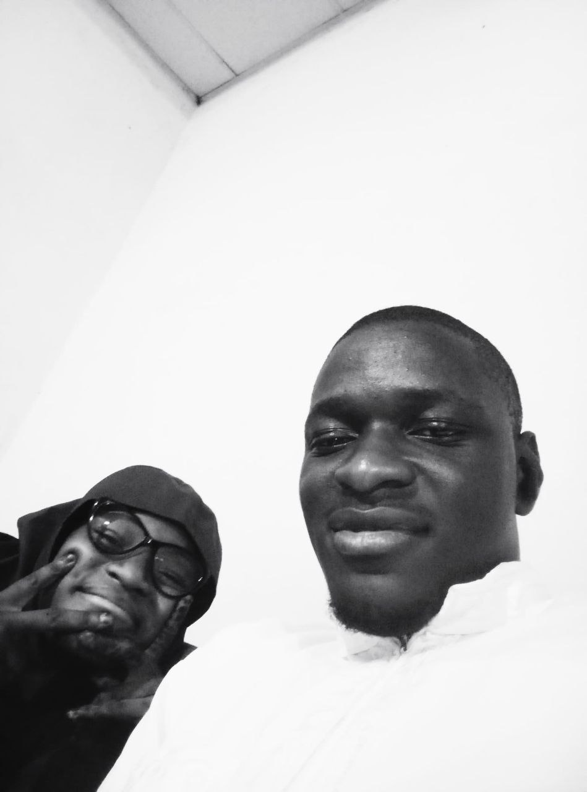
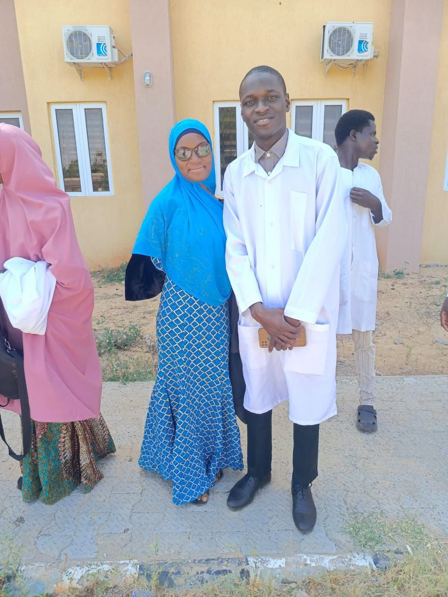
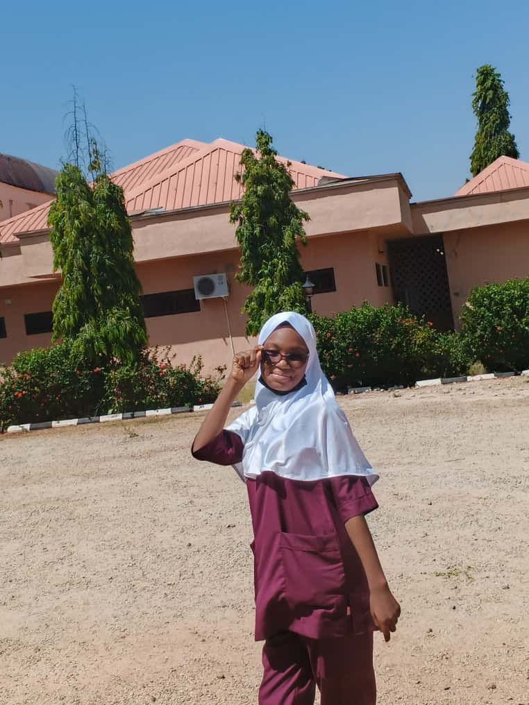
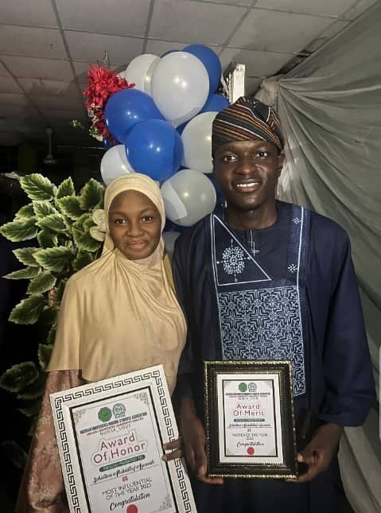
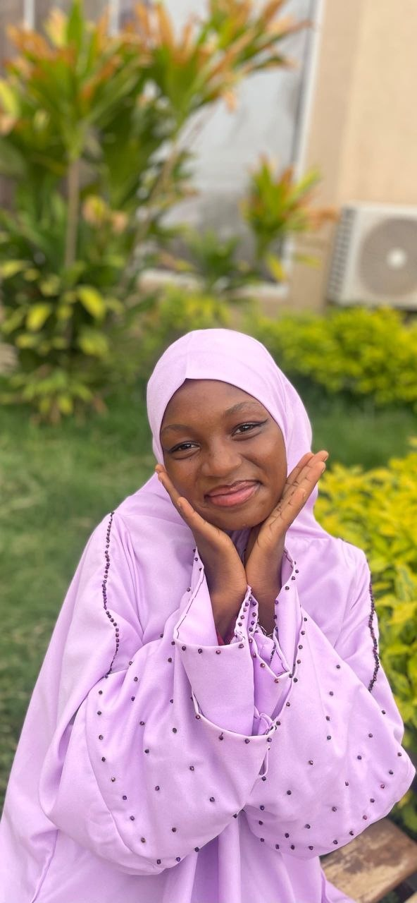
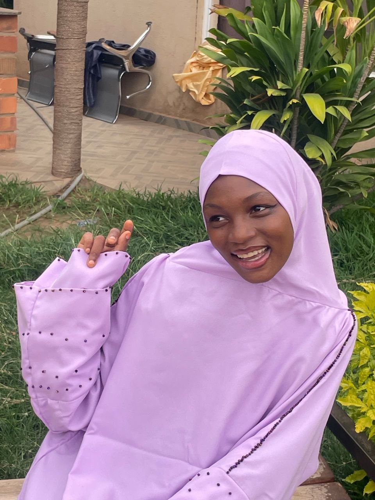
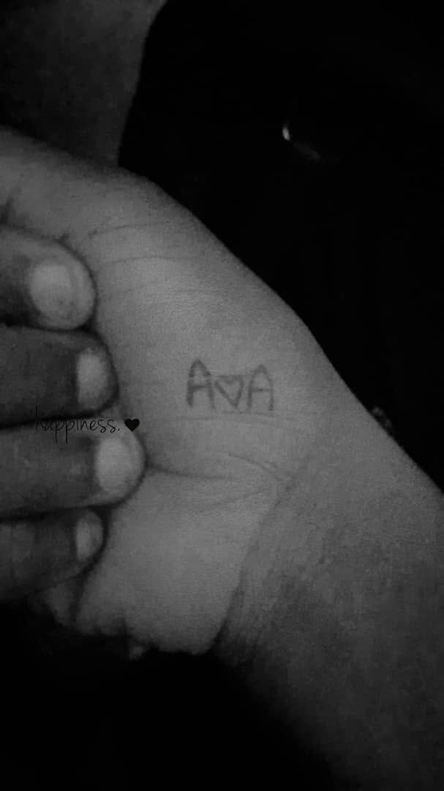
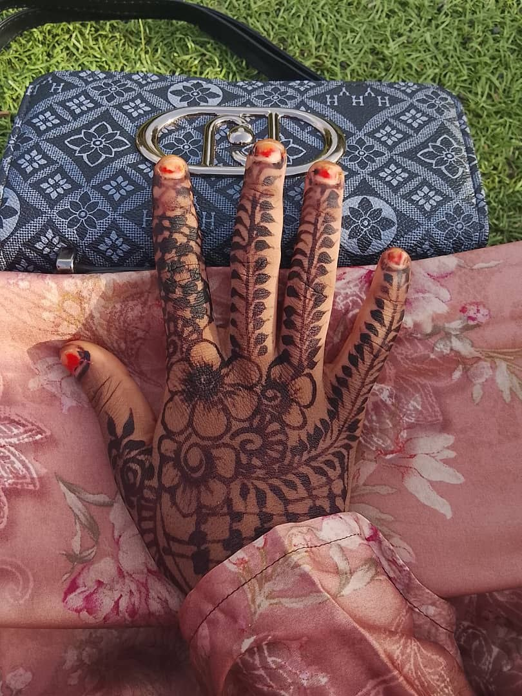

Happy Birthday, Adeola.
My safest place. My confidant. My peace.
The Story of Us
"Hello, I am Yusuf Adeola, your coursemate."
That was how it started. Nine simple words. I look back now, two and a half years later, and I am in awe of how the universe perfectly orchestrates our lives. Who would have thought that the girl who sent that simple message would become the very anchor of my existence?
Adeola, you have been my safest place. In a world that is so loud, demanding, and utterly exhausting, you are the quiet room I retreat to. You understand me in ways I don't even understand myself. You see my flaws, my bad acts, my chaotic moments, and instead of judgment, you give me grace. You make excuses for me when I don't deserve them, and you trust me with a depth that absolutely humbles me.
Our journey hasn't been a straight line. We have had soaring highs and crushing lows. We have shared moments of pure, unadulterated joy, and moments of profound sadness. We have faced tests that stretched the very fabric of our friendship, moments where the silence was heavy and we nearly walked away. But we didn't. We stayed. I have been there for you in the shadows of your needed moments, and you have stood fiercely by me in mine. We are the keepers of each other’s deepest secrets, a vault locked by two and a half years of unwavering loyalty.
I look at you, Abimbola, and I see a woman so breathtakingly beautiful—inside and out—that I find myself genuinely jealous of whoever you end up with. They will be holding a masterpiece, and I hope they spend every day of their life worshiping the ground you walk on, because you deserve nothing less.
Thank you for being my Adeola. Thank you for staying.
— Forever yours, Ayomide.
Verified Truths
Claim 01
Adeola possesses a level of beauty and grace that justifies Ayomide's absolute jealousy of her future partner.
Tap to VerifyVerdict: Absolute Fact
She is a living masterpiece. Anyone who gets to hold her heart has won the lottery of life.
Claim 02
She is Ayomide's safest place and ultimate secret-keeper.
Tap to VerifyVerdict: 100% True
Two and a half years of unbroken trust, grace for every flaw, and an impenetrable vault of shared secrets.
Claim 03
The tests, the tears, and the near-fallouts were worth it.
Tap to VerifyVerdict: Undeniable
Every single hardship only solidified that walking away from each other is simply not an option.
Clinical Care Plan: Patient Awero
Formulated by Student Nurse Ayomide
Diagnosis: Risk for overwhelming joy related to entering a new chapter of life as evidenced by birthday celebrations.
Rationale: Birthdays mark a significant milestone requiring elevated emotional support and intensive celebration.
Intervention: Administer continuous love, unwavering support, and daily reminders of her beauty.
Goal: Patient will experience profound peace and abundant laughter throughout her special day.
Outcome: Patient successfully transitions into her new age feeling deeply cherished and celebrated by Ayomide.
Diagnosis: Readiness for enhanced emotional well-being related to possessing an irreplaceable bond and a confidant.
Rationale: A strong, deeply rooted support system buffers against academic, clinical, and life stress.
Intervention: Maintain strict confidentiality of all shared secrets, provide a safe space without judgment, and continuously offer grace for any flaws.
Goal: Patient will maintain a state of absolute psychological safety and trust.
Outcome: Patient feels continuously understood, unconditionally accepted, and secure in her closest friendship.
Diagnosis: Risk for excessive radiance causing mild jealousy in her best friend, related to her genetic makeup and pure heart.
Rationale: Patient's internal and external beauty are exceptionally high, making her highly sought after.
Intervention: Admire her constantly, remind her of her immense worth, and fiercely protect her peace from anyone undeserving.
Goal: Patient will recognize her own breathtaking value without compromising her humility.
Outcome: Patient glows even brighter, fully aware she is a masterpiece, while Ayomide proudly watches over her.
My Prayers For You
For Aishat
May your path be eased. May the burdens of nursing school, of life, and of expectations be lifted from your beautiful shoulders. May God grant you peace that surpasses all understanding.
For Olaitan
May your joy never run dry. May the wealth of happiness you bring into my life be returned to you in a million folds. You will never know lack, in love, in health, or in wealth.
For Adeola
May you always find your way back to happiness. Whenever the world gets too dark, may you always find the light. And may you always know that my hand is here, ready to hold yours through it all. Amen.
2.5 Years in Frames







